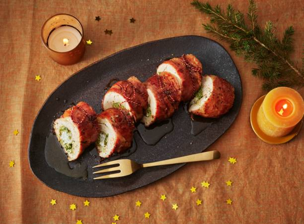

Kiprollade met parmaham en gremolata

Description
Niet alleen gremolata is geweldig lekker, het knapperige jasje van parmaham is dat ook: het houdt de kiprollade heerlijk sappig.
480 kcal - 25 min bereiden - 1 uur 40 min wachten
Ingredienten
- Snijd de peterselie en tenen knoflook zo fijn mogelijk. Boen de citroen schoon en rasp de gele schil. Meng de peterselie, knoflook en 1 ½ tl citroenrasp (per rollade) en breng op smaak met peper (gremolata).
- Snijd de kipfilets voorzichtig aan de zijkant in, totdat je ze kunt openklappen zoals een boek. Leg een kipfilet op een snijplank en leg er een stukje vershoudfolie op. Sla met een zwaar voorwerp (zoals een koekenpan) op de kip, totdat deze een dikte heeft van ca. een ½ cm. Herhaal met de rest van de kipfilets.
- Leg een groot stuk vershoudfolie op het werkblad. Verdeel de plakjes parmaham hier in de breedte over, zodat je een rechthoek krijgt van ca. 30 x 16 cm. Maak hem niet te breed, zodat je straks genoeg folie over hebt om de rollade in te rollen. Leg de platgeslagen kipfilets op de ham op de folie. Laat ze aansluiten, maar probeer ze niet te veel te laten overlappen. Breng de kip op smaak met peper en zout.
- Verdeel de gremolata en ricotta over de kip. Rol de rollade zo strak mogelijk op met behulp van de vershoudfolie. Draai de zijkanten van de folie strak aan, zodat de rollade rondom dicht zit. Leg de rollade minimaal 4 uur, maar liever een nacht (8 uur), in de koelkast om op te stijven.
- Verwarm de oven voor op 180 °C. Verwijder voorzichtig de vershoudfolie. Leg 6 stukjes keukentouw van ca. 20 cm voorzichtig onder de rollade. Begin met een touwtje in het midden en bind de uiteinden vast. Verdeel de rest van de touwtjes over de rest van de rollade.
- verse platte peterselie
- Citroen
- Knoflook
- Scharrelkipfilet
- parmaham
- Roomboter
- Ricotta
- Coke